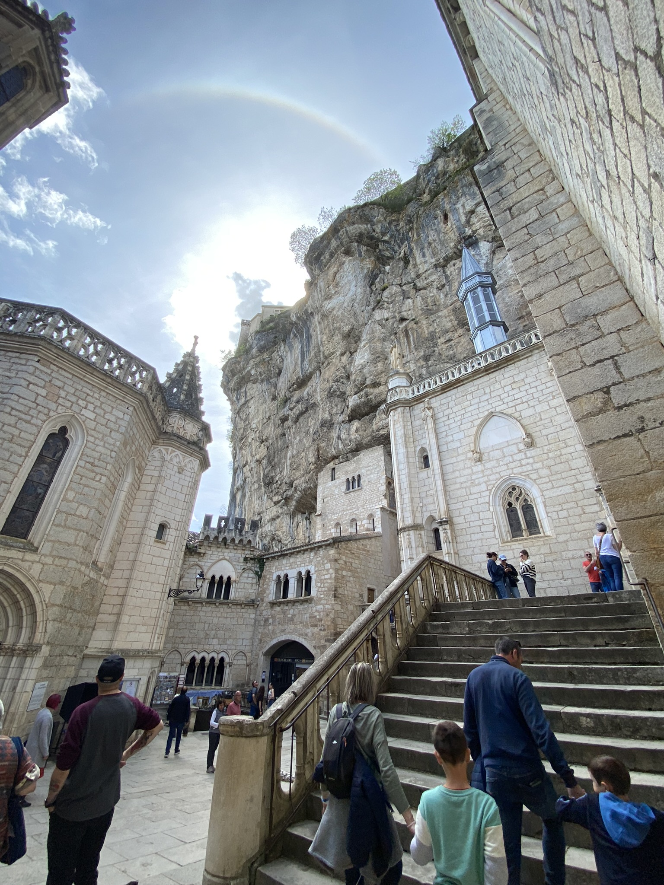
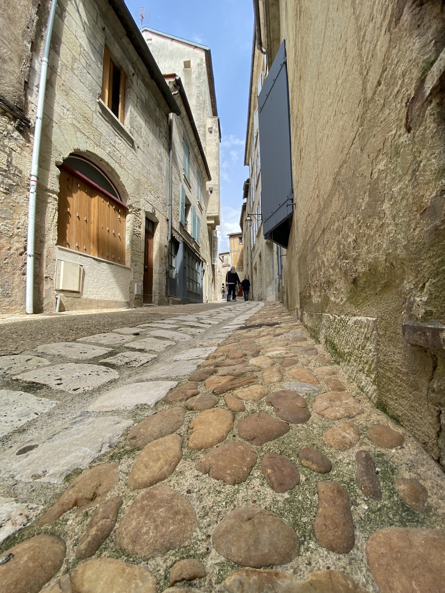
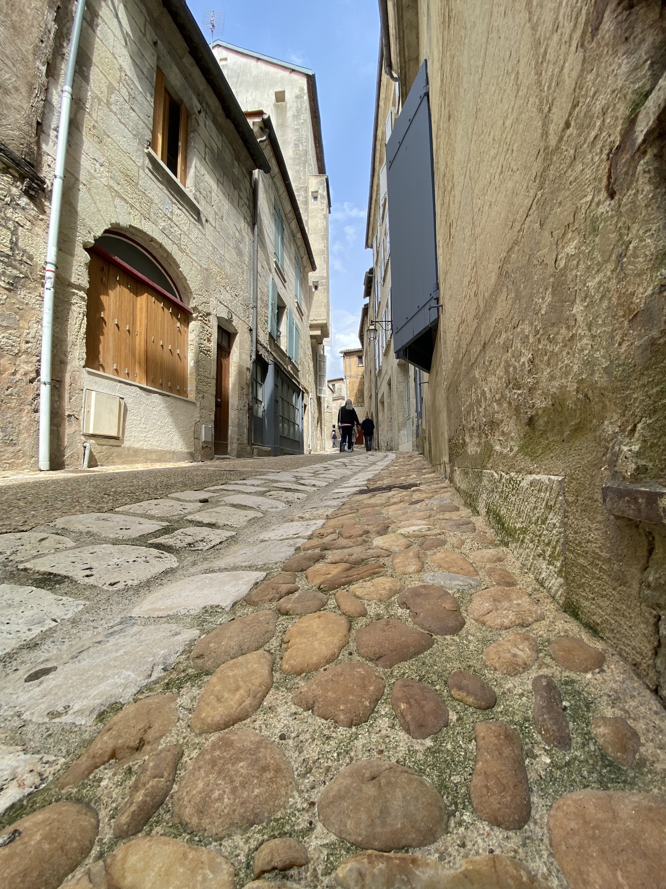

A viagem
Fizemos essa viagem para participar do casamento da minha irmã, que ocorreu no dia 16 de Abril de 2022 em Bordeaux, na França. Foi tudo muito incrível, conhecemos uma cultura totalmente diferente da brasileira em todos os aspectos.

Galeria de fotos
Rocamadour
 Rocamadour é uma comuna francesa na região administrativa de Occitânia, no departamento de Lot, sudoeste da França. Fica na antiga província de Quercy. Rocamadour - "roc amator, amante das rochas" - é um ponto turístico e de peregrinação, e permite uma bela vista de um afluente do rio Dordonha.
Grand Théâtre - Bordeaux
 Grande Teatro de Bordéus
(em francês: Grand
Théâtre de Bordeaux), é um teatro de Bordéus inaugurado a 17 de abril de 1780, com a
apresentação da obra Athalie de Jean Racine. Mandado construir pelo marechal Richelieu, aqui foi
representado pela primeira vez o balé La fille mal gardée em 1789, onde o jovem Marius Petipa
havia coreografado as suas primeiras representações de balé.
Grande Teatro de Bordéus
(em francês: Grand
Théâtre de Bordeaux), é um teatro de Bordéus inaugurado a 17 de abril de 1780, com a
apresentação da obra Athalie de Jean Racine. Mandado construir pelo marechal Richelieu, aqui foi
representado pela primeira vez o balé La fille mal gardée em 1789, onde o jovem Marius Petipa
havia coreografado as suas primeiras representações de balé.


 

Depoimentos
- Nelson:
-
Passou rápido demais!
- Marcia:
-
Não vejo a hora de voltar pra lá denovo!